In brief
Blizzard announced over 600 new recipes without publishing a complete list. This page gathers the 241 Engineering recipes recorded in the game files (client 1.60.1.70862, consulted on 12 November 2026). Names and required skills come from the game files. An acquisition marked “unknown” remains to be confirmed. Tables are grouped by required skill bracket. When acquisition, source or zone is not given in the data consulted, the cell says so. No drop rates are repeated; none were given.[1][2][4]
Key points
- 241 Engineering recipes listed below, from the game files (client 1.60.1.70862, 12 November 2026); acquisition marked “unknown” remains to be confirmed.[4] Game data (client 1.60.1.70862)
- Acquisition given in the game files: trainer 85, drop 1, quest 7, reputation 2, unknown 146.[4] Game data (client 1.60.1.70862)
- Blizzard has not published the complete recipe list, nor trainers, vendors, prices or drop rates.[1][2]
- Reagents of 241 recipes and 166 materials linked to their “where to find it” card (game files).[5] Game data (client 1.60.1.70862)
How to read this list
This list is not official. Blizzard has not published the details of this profession’s recipes (vendors, trainers, monsters, zones, prices, drop rates). The names and skills below come from the game files (client 1.60.1.70862). An acquisition marked “unknown” remains to be confirmed. The French name is the in-game localization when one was found; otherwise the English name is used in both languages. “Trainer” also covers recipes listed as learned automatically with the profession. An overview page already online, Recipes and advanced blueprints (/en/professions/recipes-and-advanced-blueprints/), restates the official acquisition rules and the lootable recipes already shown by zone.[1][2][4]
Skill 1–75 — 14 recipes (game data)
| Recipe | Required skill | How obtained | Source | Zone | Status |
|---|---|---|---|---|---|
| Crafted Light Shot | 1 | trainer | learned automatically with the profession | not recorded | game data |
| Reagent Bot | 1 | trainer | profession trainer (unnamed) | not recorded | game data |
| Rough Blasting Powder | 1 | trainer | learned automatically with the profession | not recorded | game data |
| Rough Dynamite | 1 | trainer | learned automatically with the profession | not recorded | game data |
| SAF-T Dynamite | 25 | unknown | not recorded | not recorded | game data — acquisition to be confirmed |
| SAF-T Tabs | 25 | unknown | not recorded | not recorded | game data — acquisition to be confirmed |
| Handful of Copper Bolts | 40 | trainer | profession trainer (unnamed) | not recorded | game data |
| Rough Copper Bomb | 52 | trainer | profession trainer (unnamed) | not recorded | game data |
| SAF-T Copper Bomb | 55 | unknown | not recorded | not recorded | game data — acquisition to be confirmed |
| Arclight Spanner | 65 | trainer | profession trainer (unnamed) | not recorded | game data |
| Harvester Override Signalcaster | 65 | quest | Reaping the Reapers | not recorded | game data |
| Copper Tube | 72 | trainer | profession trainer (unnamed) | not recorded | game data |
| Rough Boomstick | 72 | trainer | profession trainer (unnamed) | not recorded | game data |
| Mechanical Squirrel | 75 | unknown | not recorded | not recorded | game data — acquisition to be confirmed |
Skill 76–150 — 50 recipes (game data)
| Recipe | Required skill | How obtained | Source | Zone | Status |
|---|---|---|---|---|---|
| Coarse Blasting Powder | 80 | trainer | profession trainer (unnamed) | not recorded | game data |
| Crafted Heavy Shot | 80 | trainer | profession trainer (unnamed) | not recorded | game data |
| Crude Scope | 82 | trainer | profession trainer (unnamed) | not recorded | game data |
| Coarse Dynamite | 85 | trainer | profession trainer (unnamed) | not recorded | game data |
| Satchel of Copper Bombs | 85 | unknown | not recorded | not recorded | game data — acquisition to be confirmed |
| Copper Modulator | 87 | trainer | profession trainer (unnamed) | not recorded | game data |
| Bronze Tube | 93 | trainer | profession trainer (unnamed) | not recorded | game data |
| Large Copper Bomb | 93 | trainer | profession trainer (unnamed) | not recorded | game data |
| EZ-Thro Dynamite | 100 | unknown | not recorded | not recorded | game data — acquisition to be confirmed |
| EZ-Thro Wrap | 100 | unknown | not recorded | not recorded | game data — acquisition to be confirmed |
| Small Seaforium Charge | 100 | unknown | not recorded | not recorded | game data — acquisition to be confirmed |
| Silver Contact | 102 | trainer | profession trainer (unnamed) | not recorded | game data |
| Target Dummy | 107 | trainer | profession trainer (unnamed) | not recorded | game data |
| Small Bronze Bomb | 108 | trainer | profession trainer (unnamed) | not recorded | game data |
| Practice Lock | 110 | trainer | profession trainer (unnamed) | not recorded | game data |
| Whirring Bronze Gizmo | 113 | trainer | profession trainer (unnamed) | not recorded | game data |
| 9-60 Battery Pack | 120 | trainer | profession trainer (unnamed) | not recorded | game data |
| Crafted Solid Shot | 120 | trainer | profession trainer (unnamed) | not recorded | game data |
| Heavy Blasting Powder | 120 | trainer | profession trainer (unnamed) | not recorded | game data |
| Heavy Dynamite | 120 | trainer | profession trainer (unnamed) | not recorded | game data |
| Lovingly Crafted Boomstick | 120 | unknown | not recorded | not recorded | game data — acquisition to be confirmed |
| Shadow Goggles | 120 | unknown | not recorded | not recorded | game data — acquisition to be confirmed |
| Flying Tiger Goggles | 122 | trainer | profession trainer (unnamed) | not recorded | game data |
| Deadly Blunderbuss | 124 | trainer | profession trainer (unnamed) | not recorded | game data |
| Sandpaper | 124 | trainer | profession trainer (unnamed) | not recorded | game data |
| Flame Deflector | 125 | unknown | not recorded | not recorded | game data — acquisition to be confirmed |
| Gnomish Universal Remote | 125 | unknown | not recorded | not recorded | game data — acquisition to be confirmed |
| Small Blue Rocket | 125 | unknown | not recorded | not recorded | game data — acquisition to be confirmed |
| Small Green Rocket | 125 | unknown | not recorded | not recorded | game data — acquisition to be confirmed |
| Small Purple Rocket | 125 | unknown | not recorded | not recorded | game data — acquisition to be confirmed |
| Small Red Rocket | 125 | unknown | not recorded | not recorded | game data — acquisition to be confirmed |
| Small White Rocket | 125 | unknown | not recorded | not recorded | game data — acquisition to be confirmed |
| Small Yellow Rocket | 125 | unknown | not recorded | not recorded | game data — acquisition to be confirmed |
| Big Bronze Bomb | 128 | trainer | profession trainer (unnamed) | not recorded | game data |
| Standard Scope | 129 | trainer | profession trainer (unnamed) | not recorded | game data |
| EZ-Thro Copper Bomb XL | 130 | unknown | not recorded | not recorded | game data — acquisition to be confirmed |
| Goblin Rocket Boots | 130 | unknown | not recorded | not recorded | game data — acquisition to be confirmed |
| Bronze Framework | 133 | trainer | profession trainer (unnamed) | not recorded | game data |
| Hoof-Shaped Foot Pedal | 140 | quest | Gizmo for Warug | not recorded | game data |
| Minor Recombobulator | 140 | unknown | not recorded | not recorded | game data — acquisition to be confirmed |
| Repair Bot | 140 | drop | Sneed | The Deadmines | game data |
| Aquadynamic Fish Attractor | 145 | trainer | profession trainer (unnamed) | not recorded | game data |
| Moonsight Rifle | 145 | unknown | not recorded | not recorded | game data — acquisition to be confirmed |
| No Slip SAF-T Padding | 145 | unknown | not recorded | not recorded | game data — acquisition to be confirmed |
| SAF-T Bronze Bomb | 145 | unknown | not recorded | not recorded | game data — acquisition to be confirmed |
| Silver-plated Shotgun | 149 | trainer | profession trainer (unnamed) | not recorded | game data |
| Blue Firework | 150 | unknown | not recorded | not recorded | game data — acquisition to be confirmed |
| Green Firework | 150 | unknown | not recorded | not recorded | game data — acquisition to be confirmed |
| Red Firework | 150 | unknown | not recorded | not recorded | game data — acquisition to be confirmed |
| SAF-T Jumbo Dynamite | 150 | unknown | not recorded | not recorded | game data — acquisition to be confirmed |
Skill 151–225 — 87 recipes (game data)
| Recipe | Required skill | How obtained | Source | Zone | Status |
|---|---|---|---|---|---|
| Ornate Spyglass | 154 | trainer | profession trainer (unnamed) | not recorded | game data |
| Ice Deflector | 155 | unknown | not recorded | not recorded | game data — acquisition to be confirmed |
| Iron Strut | 155 | trainer | profession trainer (unnamed) | not recorded | game data |
| Discombobulator Ray | 160 | unknown | not recorded | not recorded | game data — acquisition to be confirmed |
| Gyrochronatom | 160 | trainer | profession trainer (unnamed) | not recorded | game data |
| Compact Harvest Reaper Kit | 165 | trainer | profession trainer (unnamed) | not recorded | game data |
| Goblin Jumper Cables | 165 | unknown | not recorded | not recorded | game data — acquisition to be confirmed |
| Gyromatic Micro-Adjustor | 165 | trainer | profession trainer (unnamed) | not recorded | game data |
| Iron Grenade | 165 | trainer | profession trainer (unnamed) | not recorded | game data |
| Portable Bronze Mortar | 165 | unknown | not recorded | not recorded | game data — acquisition to be confirmed |
| Satchel of Bronze Bombs | 165 | unknown | not recorded | not recorded | game data — acquisition to be confirmed |
| Explosive Sheep | 169 | trainer | profession trainer (unnamed) | not recorded | game data |
| Green Tinted Goggles | 169 | trainer | profession trainer (unnamed) | not recorded | game data |
| Solid Blasting Powder | 170 | trainer | profession trainer (unnamed) | not recorded | game data |
| Solid Dynamite | 170 | trainer | profession trainer (unnamed) | not recorded | game data |
| Advanced Target Dummy | 175 | trainer | profession trainer (unnamed) | not recorded | game data |
| Bright-Eye Goggles | 175 | unknown | not recorded | not recorded | game data — acquisition to be confirmed |
| Clanking Cord | 175 | unknown | not recorded | not recorded | game data — acquisition to be confirmed |
| Gizmo Girdle | 175 | unknown | not recorded | not recorded | game data — acquisition to be confirmed |
| Large Blue Rocket | 175 | unknown | not recorded | not recorded | game data — acquisition to be confirmed |
| Large Green Rocket | 175 | unknown | not recorded | not recorded | game data — acquisition to be confirmed |
| Large Purple Rocket | 175 | unknown | not recorded | not recorded | game data — acquisition to be confirmed |
| Large Red Rocket | 175 | unknown | not recorded | not recorded | game data — acquisition to be confirmed |
| Large White Rocket | 175 | unknown | not recorded | not recorded | game data — acquisition to be confirmed |
| Large Yellow Rocket | 175 | unknown | not recorded | not recorded | game data — acquisition to be confirmed |
| SAF-T Bell | 175 | unknown | not recorded | not recorded | game data — acquisition to be confirmed |
| Serrated Strap | 175 | unknown | not recorded | not recorded | game data — acquisition to be confirmed |
| Shafety Sheep | 175 | unknown | not recorded | not recorded | game data — acquisition to be confirmed |
| Whimsical Waistwrap | 175 | unknown | not recorded | not recorded | game data — acquisition to be confirmed |
| Accurate Scope | 180 | unknown | not recorded | not recorded | game data — acquisition to be confirmed |
| Big Iron Bomb | 180 | trainer | profession trainer (unnamed) | not recorded | game data |
| Craftsman's Monocle | 185 | unknown | not recorded | not recorded | game data — acquisition to be confirmed |
| Flash Bomb | 185 | quest | Flash Bomb Recipe | not recorded | game data |
| Mithril Tube | 185 | trainer | profession trainer (unnamed) | not recorded | game data |
| Centaur Banner Deployment Device | 190 | quest | Gizmo for Warug | not recorded | game data |
| EZ-Thro Bronze Mortar | 190 | unknown | not recorded | not recorded | game data — acquisition to be confirmed |
| EZ-Thro Fireproof Fuse | 190 | unknown | not recorded | not recorded | game data — acquisition to be confirmed |
| Mechanical Repair Kit | 190 | trainer | profession trainer (unnamed) | not recorded | game data |
| Snowmaster 9000 | 190 | unknown | not recorded | not recorded | game data — acquisition to be confirmed |
| Unstable Trigger | 190 | trainer | profession trainer (unnamed) | not recorded | game data |
| Goblin Land Mine | 195 | unknown | not recorded | not recorded | game data — acquisition to be confirmed |
| Goblin Sapper Charge | 195 | trainer | profession trainer (unnamed) | not recorded | game data |
| Mobile Alarm | 195 | trainer | profession trainer (unnamed) | not recorded | game data |
| Bent Goggles | 200 | unknown | not recorded | not recorded | game data — acquisition to be confirmed |
| Dented Goggles | 200 | unknown | not recorded | not recorded | game data — acquisition to be confirmed |
| EZ-Thro Dynamite II | 200 | unknown | not recorded | not recorded | game data — acquisition to be confirmed |
| EZ-Thro Grenade | 200 | unknown | not recorded | not recorded | game data — acquisition to be confirmed |
| Explosive Arrow | 200 | trainer | profession trainer (unnamed) | not recorded | game data |
| Floppy Goggles | 200 | unknown | not recorded | not recorded | game data — acquisition to be confirmed |
| Gnomish Cloaking Device | 200 | unknown | not recorded | not recorded | game data — acquisition to be confirmed |
| Goblin Rocket Fuel Recipe | 200 | trainer | profession trainer (unnamed) | not recorded | game data |
| Hi-Impact Mithril Slugs | 200 | trainer | profession trainer (unnamed) | not recorded | game data |
| Inlaid Mithril Cylinder Plans | 200 | trainer | profession trainer (unnamed) | not recorded | game data |
| Large Seaforium Charge | 200 | unknown | not recorded | not recorded | game data — acquisition to be confirmed |
| Mechanical Dragonling | 200 | unknown | not recorded | not recorded | game data — acquisition to be confirmed |
| Stuckbutton Goggles | 200 | unknown | not recorded | not recorded | game data — acquisition to be confirmed |
| Goblin Mining Helmet | 205 | unknown | not recorded | not recorded | game data — acquisition to be confirmed |
| Lil' Smoky | 205 | unknown | not recorded | not recorded | game data — acquisition to be confirmed |
| Mithril Casing | 205 | trainer | profession trainer (unnamed) | not recorded | game data |
| Mithril Frag Bomb | 205 | trainer | profession trainer (unnamed) | not recorded | game data |
| Pet Bombling | 205 | unknown | not recorded | not recorded | game data — acquisition to be confirmed |
| Deadly Scope | 210 | unknown | not recorded | not recorded | game data — acquisition to be confirmed |
| SAF-T Bomb | 215 | unknown | not recorded | not recorded | game data — acquisition to be confirmed |
| SAF-T Casing | 215 | unknown | not recorded | not recorded | game data — acquisition to be confirmed |
| Catseye Ultra Goggles | 220 | unknown | not recorded | not recorded | game data — acquisition to be confirmed |
| Fire Goggles | 220 | trainer | profession trainer (unnamed) | not recorded | game data |
| Gnomish Shrink Ray | 220 | trainer | profession trainer (unnamed) | not recorded | game data |
| Goblin Bomb Dispenser | 220 | trainer | profession trainer (unnamed) | not recorded | game data |
| Goblin Construction Helmet | 220 | trainer | profession trainer (unnamed) | not recorded | game data |
| Goblin Mortar | 220 | trainer | profession trainer (unnamed) | not recorded | game data |
| Mithril Blunderbuss | 220 | trainer | profession trainer (unnamed) | not recorded | game data |
| Mithril Heavy-bore Rifle | 220 | unknown | not recorded | not recorded | game data — acquisition to be confirmed |
| Blue Rocket Cluster | 225 | unknown | not recorded | not recorded | game data — acquisition to be confirmed |
| Compact Critter Carrier | 225 | unknown | not recorded | not recorded | game data — acquisition to be confirmed |
| Emergency Field Cloak | 225 | unknown | not recorded | not recorded | game data — acquisition to be confirmed |
| Firework Launcher | 225 | quest | Firework Launcher | not recorded | game data |
| Gnomish Goggles | 225 | trainer | profession trainer (unnamed) | not recorded | game data |
| Gnomish Net-o-Matic Projector | 225 | trainer | profession trainer (unnamed) | not recorded | game data |
| Green Rocket Cluster | 225 | unknown | not recorded | not recorded | game data — acquisition to be confirmed |
| Hi-Explosive Bomb | 225 | trainer | profession trainer (unnamed) | not recorded | game data |
| Parachute Cloak | 225 | unknown | not recorded | not recorded | game data — acquisition to be confirmed |
| Purple Rocket Cluster | 225 | unknown | not recorded | not recorded | game data — acquisition to be confirmed |
| Red Rocket Cluster | 225 | unknown | not recorded | not recorded | game data — acquisition to be confirmed |
| Spellpower Goggles Xtreme | 225 | unknown | not recorded | not recorded | game data — acquisition to be confirmed |
| The Big One | 225 | trainer | profession trainer (unnamed) | not recorded | game data |
| White Rocket Cluster | 225 | unknown | not recorded | not recorded | game data — acquisition to be confirmed |
| Yellow Rocket Cluster | 225 | unknown | not recorded | not recorded | game data — acquisition to be confirmed |
Skill 226–300 — 90 recipes (game data)
| Recipe | Required skill | How obtained | Source | Zone | Status |
|---|---|---|---|---|---|
| Deepdive Helmet | 230 | unknown | not recorded | not recorded | game data — acquisition to be confirmed |
| Gnomish Harm Prevention Belt | 230 | trainer | profession trainer (unnamed) | not recorded | game data |
| Goblin "Boom" Box | 230 | trainer | profession trainer (unnamed) | not recorded | game data |
| Satchel of Iron Bombs | 230 | unknown | not recorded | not recorded | game data — acquisition to be confirmed |
| Gnomish Ham Radio | 235 | trainer | profession trainer (unnamed) | not recorded | game data |
| Goblin Radio | 235 | trainer | profession trainer (unnamed) | not recorded | game data |
| Mithril Gyro-Shot | 235 | trainer | profession trainer (unnamed) | not recorded | game data |
| EZ-Thro Tru-Trigger | 240 | unknown | not recorded | not recorded | game data — acquisition to be confirmed |
| Gnomish Rocket Boots | 240 | trainer | profession trainer (unnamed) | not recorded | game data |
| Sniper Scope | 240 | unknown | not recorded | not recorded | game data — acquisition to be confirmed |
| Tru-Trigger Frag Bomb | 240 | unknown | not recorded | not recorded | game data — acquisition to be confirmed |
| Dense Blasting Powder | 245 | trainer | profession trainer (unnamed) | not recorded | game data |
| Dense Dynamite | 245 | trainer | profession trainer (unnamed) | not recorded | game data |
| Gnomish Battle Chicken | 245 | trainer | profession trainer (unnamed) | not recorded | game data |
| Rose Colored Goggles | 245 | trainer | profession trainer (unnamed) | not recorded | game data |
| Gnomish Army Knife | 250 | unknown | not recorded | not recorded | game data — acquisition to be confirmed |
| Gnomish Mind Control Cap | 250 | trainer | profession trainer (unnamed) | not recorded | game data |
| Mithril Mechanical Dragonling | 250 | unknown | not recorded | not recorded | game data — acquisition to be confirmed |
| SAF-T Disposable Parachute | 250 | unknown | not recorded | not recorded | game data — acquisition to be confirmed |
| Snake Burst Firework | 250 | unknown | not recorded | not recorded | game data — acquisition to be confirmed |
| Gnomish Death Ray | 255 | trainer | profession trainer (unnamed) | not recorded | game data |
| Goblin Dragon Gun | 255 | trainer | profession trainer (unnamed) | not recorded | game data |
| Goblin Rocket Helmet | 260 | trainer | profession trainer (unnamed) | not recorded | game data |
| Green Lens | 260 | trainer | profession trainer (unnamed) | not recorded | game data |
| Gyrofreeze Ice Reflector | 260 | unknown | not recorded | not recorded | game data — acquisition to be confirmed |
| Thorium Grenade | 260 | unknown | not recorded | not recorded | game data — acquisition to be confirmed |
| Thorium Rifle | 260 | unknown | not recorded | not recorded | game data — acquisition to be confirmed |
| Thorium Widget | 260 | unknown | not recorded | not recorded | game data — acquisition to be confirmed |
| Truesilver Transformer | 260 | unknown | not recorded | not recorded | game data — acquisition to be confirmed |
| Unsanctified Grenade | 260 | unknown | not recorded | not recorded | game data — acquisition to be confirmed |
| World Enlarger | 260 | unknown | not recorded | not recorded | game data — acquisition to be confirmed |
| Alarm-O-Bot | 265 | unknown | not recorded | not recorded | game data — acquisition to be confirmed |
| Goblin Jumper Cables XL | 265 | unknown | not recorded | not recorded | game data — acquisition to be confirmed |
| Lifelike Mechanical Toad | 265 | unknown | not recorded | not recorded | game data — acquisition to be confirmed |
| Salt Shaker | 265 | trainer | profession trainer (unnamed) | not recorded | game data |
| Spellpower Goggles Xtreme Plus | 270 | unknown | not recorded | not recorded | game data — acquisition to be confirmed |
| Dark Iron Rifle | 275 | unknown | not recorded | not recorded | game data — acquisition to be confirmed |
| Firework Cluster Launcher | 275 | quest | Cluster Launcher | not recorded | game data |
| Large Blue Rocket Cluster | 275 | unknown | not recorded | not recorded | game data — acquisition to be confirmed |
| Large Green Rocket Cluster | 275 | unknown | not recorded | not recorded | game data — acquisition to be confirmed |
| Large Purple Rocket Cluster | 275 | unknown | not recorded | not recorded | game data — acquisition to be confirmed |
| Large Red Rocket Cluster | 275 | unknown | not recorded | not recorded | game data — acquisition to be confirmed |
| Large White Rocket Cluster | 275 | unknown | not recorded | not recorded | game data — acquisition to be confirmed |
| Large Yellow Rocket Cluster | 275 | unknown | not recorded | not recorded | game data — acquisition to be confirmed |
| Loot-A-Rang | 275 | unknown | not recorded | not recorded | game data — acquisition to be confirmed |
| Major Recombobulator | 275 | unknown | not recorded | not recorded | game data — acquisition to be confirmed |
| Masterwork Target Dummy | 275 | unknown | not recorded | not recorded | game data — acquisition to be confirmed |
| Powerful Seaforium Charge | 275 | unknown | not recorded | not recorded | game data — acquisition to be confirmed |
| SAF-T Clever Dynamite | 275 | unknown | not recorded | not recorded | game data — acquisition to be confirmed |
| SAF-T Tube | 275 | unknown | not recorded | not recorded | game data — acquisition to be confirmed |
| Steam Tonk Controller | 275 | quest | 40 Tickets - Schematic: Steam Tonk Controller | not recorded | game data |
| Thorium Tube | 275 | unknown | not recorded | not recorded | game data — acquisition to be confirmed |
| Dimensional Ripper - Everlook | 280 | trainer | profession trainer (unnamed) | not recorded | game data |
| Ultrasafe Transporter - Gadgetzan | 280 | trainer | profession trainer (unnamed) | not recorded | game data |
| Dark Iron Bomb | 285 | unknown | not recorded | not recorded | game data — acquisition to be confirmed |
| Delicate Arcanite Converter | 285 | unknown | not recorded | not recorded | game data — acquisition to be confirmed |
| EZ-Thro Shell | 285 | unknown | not recorded | not recorded | game data — acquisition to be confirmed |
| EZ-Thro Thorium Grenade | 285 | unknown | not recorded | not recorded | game data — acquisition to be confirmed |
| Satchel of Dark Iron Bombs | 285 | unknown | not recorded | not recorded | game data — acquisition to be confirmed |
| Thorium Shells | 285 | unknown | not recorded | not recorded | game data — acquisition to be confirmed |
| Hyper-Radiant Flame Reflector | 290 | unknown | not recorded | not recorded | game data — acquisition to be confirmed |
| Master Engineer's Goggles | 290 | unknown | not recorded | not recorded | game data — acquisition to be confirmed |
| Voice Amplification Modulator | 290 | unknown | not recorded | not recorded | game data — acquisition to be confirmed |
| Anarchist's Workbench | 300 | unknown | not recorded | not recorded | game data — acquisition to be confirmed |
| Arcane Bomb | 300 | unknown | not recorded | not recorded | game data — acquisition to be confirmed |
| Arcanite Dragonling | 300 | unknown | not recorded | not recorded | game data — acquisition to be confirmed |
| Biznicks 247x128 Accurascope | 300 | unknown | not recorded | not recorded | game data — acquisition to be confirmed |
| Bloodvine Goggles | 300 | reputation | Zandalar Tribe (Honored) | not recorded | game data |
| Bloodvine Lens | 300 | reputation | Zandalar Tribe (Friendly) | not recorded | game data |
| Core Marksman Rifle | 300 | unknown | not recorded | not recorded | game data — acquisition to be confirmed |
| Dimensional Transporter - Mt. Hyjal | 300 | unknown | not recorded | not recorded | game data — acquisition to be confirmed |
| EZ and SAF Field Transporter: Mt. Hyjal | 300 | unknown | not recorded | not recorded | game data — acquisition to be confirmed |
| EZ-Thro Dark Bomb | 300 | unknown | not recorded | not recorded | game data — acquisition to be confirmed |
| EZ-Thro Field Transporter: Gadgetzan | 300 | unknown | not recorded | not recorded | game data — acquisition to be confirmed |
| EZ-Thro Mana Bomb | 300 | unknown | not recorded | not recorded | game data — acquisition to be confirmed |
| Field Repair Bot 74A | 300 | unknown | not recorded | not recorded | game data — acquisition to be confirmed |
| Flawless Arcanite Rifle | 300 | unknown | not recorded | not recorded | game data — acquisition to be confirmed |
| Force Reactive Disk | 300 | unknown | not recorded | not recorded | game data — acquisition to be confirmed |
| Gnomish Poultryizer | 300 | unknown | not recorded | not recorded | game data — acquisition to be confirmed |
| Gnomish Weather Machine | 300 | unknown | not recorded | not recorded | game data — acquisition to be confirmed |
| Hyper Deluxe Sniper Rifle Mk XVII | 300 | unknown | not recorded | not recorded | game data — acquisition to be confirmed |
| SAF-T Emergency Ripper: Everlook | 300 | unknown | not recorded | not recorded | game data — acquisition to be confirmed |
| SAF-T Ultra Precision Scope | 300 | unknown | not recorded | not recorded | game data — acquisition to be confirmed |
| Stealthman 52 | 300 | unknown | not recorded | not recorded | game data — acquisition to be confirmed |
| Swiftfeather Arrow | 300 | unknown | not recorded | not recorded | game data — acquisition to be confirmed |
| Swiftstrike Shot | 300 | unknown | not recorded | not recorded | game data — acquisition to be confirmed |
| Tranquil Mechanical Yeti | 300 | trainer | profession trainer (unnamed) | not recorded | game data |
| Ultra-Flash Shadow Reflector | 300 | unknown | not recorded | not recorded | game data — acquisition to be confirmed |
| Ultralight Goblin Glider | 300 | unknown | not recorded | not recorded | game data — acquisition to be confirmed |
| Ultrasafe Rechargeable Battery | 300 | unknown | not recorded | not recorded | game data — acquisition to be confirmed |
Materials: where to find them
The 166 materials asked for by the 241 recipes on this page, sorted by family, with the number of recipes using each. Each material leads to its “where to find it” card; the folding table gives the reagents of each recipe. Reagents read from the game files (client 1.60.1.70862). All families: Materials: where to find them.[5] Game data (client 1.60.1.70862)
Ore, bars and stone — 22
 Mithril Bar33
Mithril Bar33 Thorium Bar16
Thorium Bar16 Bronze Bar12
Bronze Bar12 Truesilver Bar12
Truesilver Bar12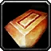
Copper Bar11 Iron Bar10
Iron Bar10 Dark Iron Bar6
Dark Iron Bar6 Legionite Bar5
Legionite Bar5 Arcanite Bar4
Arcanite Bar4 Heavy Thorium Bar4
Heavy Thorium Bar4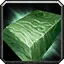
Azerothium Bar3 Dense Stone2
Dense Stone2 Enchanted Thorium Bar2
Enchanted Thorium Bar2 Silver Bar2
Silver Bar2 Bauxite1
Bauxite1 Coarse Stone1
Coarse Stone1 Heavy Stone1
Heavy Stone1 Pitchblende1
Pitchblende1 Pyrite1
Pyrite1 Rough Stone1
Rough Stone1 Solid Stone1
Solid Stone1 Steel Bar1
Steel Bar1
Herbs — 5
Leather, hides and scales — 10
- Heavy Leather26
 Medium Leather16
Medium Leather16 Rugged Leather13
Rugged Leather13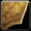
Thick Leather12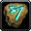
Enchanted Leather6 Light Leather3
Light Leather3 Pristine Scale2
Pristine Scale2 Cured Rugged Hide1
Cured Rugged Hide1 Deeprock Salt1
Deeprock Salt1 Pristine Hide1
Pristine Hide1
Cloth — 11
 Runecloth14
Runecloth14 Wool Cloth10
Wool Cloth10 Silk Cloth7
Silk Cloth7 Linen Cloth6
Linen Cloth6 Mageweave Cloth4
Mageweave Cloth4 Bolt of Mageweave2
Bolt of Mageweave2 Ironweb Spider Silk2
Ironweb Spider Silk2- Shadow Silk2
 Bolt of Linen Cloth1
Bolt of Linen Cloth1 Bolt of Silk Cloth1
Bolt of Silk Cloth1- Thick Spider's Silk1
Elemental and enchanting materials — 19
 Elemental Fire5
Elemental Fire5 Elemental Earth4
Elemental Earth4 Essence of Air4
Essence of Air4 Essence of Earth4
Essence of Earth4 Core of Earth3
Core of Earth3 Essence of Fire3
Essence of Fire3 Heart of Fire3
Heart of Fire3 Living Essence3
Living Essence3 Elemental Air2
Elemental Air2 Essence of Undeath2
Essence of Undeath2 Essence of Water2
Essence of Water2 Globe of Water2
Globe of Water2 Illusion Dust2
Illusion Dust2 Greater Eternal Essence1
Greater Eternal Essence1 Greater Nether Essence1
Greater Nether Essence1 Heart of the Wild1
Heart of the Wild1 Ichor of Undeath1
Ichor of Undeath1 Large Brilliant Shard1
Large Brilliant Shard1 Malleable Essence of Nature1
Malleable Essence of Nature1
Engineering parts — 40
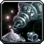
Solid Blasting Powder24 Heavy Blasting Powder23
Heavy Blasting Powder23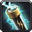
Unstable Trigger22 Mithril Casing19
Mithril Casing19 Thorium Widget18
Thorium Widget18 Gold Power Core17
Gold Power Core17 Gyrochronatom17
Gyrochronatom17 Dense Blasting Powder16
Dense Blasting Powder16- Coarse Blasting Powder15
 Mithril Tube15
Mithril Tube15 Whirring Bronze Gizmo15
Whirring Bronze Gizmo15 Bronze Tube13
Bronze Tube13 Handful of Copper Bolts12
Handful of Copper Bolts12 Truesilver Transformer11
Truesilver Transformer11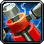
Delicate Arcanite Converter9 Bronze Framework8
Bronze Framework8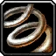
Fused Wiring8 Silver Contact8
Silver Contact8 Copper Modulator7
Copper Modulator7 Goblin Rocket Fuel7
Goblin Rocket Fuel7 Iron Strut7
Iron Strut7- Inlaid Mithril Cylinder6
 Thorium Tube6
Thorium Tube6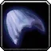
EZ-Thro Shell5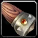
Heavy Stock5 Rough Blasting Powder5
Rough Blasting Powder5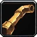
Copper Tube4 EZ-Thro Fireproof Fuse3
EZ-Thro Fireproof Fuse3 SAF-T Casing3
SAF-T Casing3 SAF-T Tube3
SAF-T Tube3 EZ-Thro Wrap2
EZ-Thro Wrap2 Engineer's Ink2
Engineer's Ink2 Flask of Oil2
Flask of Oil2 No Slip SAF-T Padding2
No Slip SAF-T Padding2- Wooden Stock2
 EZ-Thro Tru-Trigger1
EZ-Thro Tru-Trigger1 Golem Isospring1
Golem Isospring1 SAF-T Bell1
SAF-T Bell1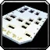
SAF-T Tabs1 Sandpaper1
Sandpaper1
Thread, vials, dyes and other reagents — 27
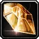
Citrine10 Star Ruby10
Star Ruby10 Jade6
Jade6 Aquamarine5
Aquamarine5 Moss Agate5
Moss Agate5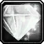
Azerothian Diamond4 Malachite4
Malachite4 Large Opal3
Large Opal3 Tigerseye3
Tigerseye3 Viridian Dye3
Viridian Dye3 Weak Flux3
Weak Flux3 Blank Parchment2
Blank Parchment2 Blue Sapphire2
Blue Sapphire2 Cerulean Dye2
Cerulean Dye2- Flask of Mojo2
 Lava Core2
Lava Core2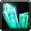
Lesser Moonstone2 Powerful Mojo2
Powerful Mojo2 Shadowgem2
Shadowgem2 Souldarite2
Souldarite2 Sulfuric Acid2
Sulfuric Acid2 Blue Pearl1
Blue Pearl1 Fiery Core1
Fiery Core1 Huge Emerald1
Huge Emerald1 Magenta Dye1
Magenta Dye1 Small Flame Sac1
Small Flame Sac1 Torbernite1
Torbernite1
Items used as reagents — 32
 Ornate Spyglass4
Ornate Spyglass4 Frost Oil3
Frost Oil3- Refreshing Spring Water3
 Big Iron Bomb2
Big Iron Bomb2 Black Mageweave Boots2
Black Mageweave Boots2 Deadly Scope2
Deadly Scope2 Fire Goggles2
Fire Goggles2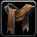
Linen Cloak2- Accurate Scope1
- Big Bronze Bomb1
 Catseye Draught1
Catseye Draught1- Crude Scope1
- Dark Iron Bomb1
 Dimensional Ripper - Everlook1
Dimensional Ripper - Everlook1 Dimensional Transporter - Mt. Hyjal1
Dimensional Transporter - Mt. Hyjal1 Dusky Belt1
Dusky Belt1 Essence of Anarchy1
Essence of Anarchy1- Flying Tiger Goggles1
 Gnomish Cloaking Device1
Gnomish Cloaking Device1- Goblin Construction Helmet1
- Green Tinted Goggles1
 Light Feather1
Light Feather1 Mithril Mechanical Dragonling1
Mithril Mechanical Dragonling1 Nightcrawlers1
Nightcrawlers1 Parachute Cloak1
Parachute Cloak1 Razor Arrow1
Razor Arrow1 Rough Copper Bomb1
Rough Copper Bomb1 Snowball1
Snowball1 Solid Dynamite1
Solid Dynamite1- Spellpower Goggles Xtreme1
- The Big One1
 Ultrasafe Transporter: Gadgetzan1
Ultrasafe Transporter: Gadgetzan1
Reagents of each recipe · 241 recipes
Correction history
- 12 November 2026 (draft, not approved): first complete list of this profession’s recipes, from client-extracted data, marked “to be confirmed”. No publication.[4][1]
- 13 November 2026: “to be confirmed” removed from facts found in the game files (client 1.60.1.70862), t359u decision. Acquisition marked “unknown”, zones not given, sources without a build stamp, and inferred values remain to be confirmed. This is not an official Blizzard confirmation, and not a publication.[4] Game data (client 1.60.1.70862)
- 14 November 2026: internal links to already published sheets (bestiaries, recipe lists, dungeons) — v40 batch, t361u. No new facts.[1][2][3][4]
- 17 November 2026 (v42): added the “Materials: where to find them” section (reagents of each recipe, read from the game files, client 1.60.1.70862).[5] Game data (client 1.60.1.70862)
What is confirmed / what remains to be confirmed
Confirmed by official sources
Still to be confirmed
- Complete official list of recipes, materials, prices and named trainers: not published by Blizzard.
- For some recipes, acquisition, source or zone was not given in the data consulted; those cells stay as “not recorded”.
- Drop rates: not given in the data consulted, and not officially published.
- Some recipes have no distinct French name in the data consulted: the English name is then used.
Key dates
Sources
- [1] World of Warcraft: Forever Deep Dive Panel Recap (EN) · published · accessed
Récapitulatif de la présentation « Au cœur de World of Warcraft: Forever » (FR) · published · accessed - [2] Gather Around the Campfire in World of Warcraft: Forever (EN) · published · accessed
Retrouvez-vous autour d’un feu de camp dans World of Warcraft: Forever (FR) · published · accessed - [3] WoW: Forever Hotfixes - November 11, 2026 (EN) · published · accessed
- [4] Engineering profession guide — full recipe list (game data (client 1.60.1.70862) (EN) · no publication date shown · accessed
Guide Ingénierie — liste des recettes (données du jeu (client 1.60.1.70862) (FR) · no publication date shown · accessed Game data — client 1.60.1.70862 - [5] WoW Forever client files, build 1.60.1.70862 — data tables and icons read from Blizzard’s official CDN (EN) · no publication date shown · accessed Game data — client 1.60.1.70862
Official Blizzard Entertainment sources (all rights reserved). This wiki offers an original synthesis; only short quotes are reproduced. Announced information may change before or after launch. Sources marked “game data” come from the WoW Forever client files (build 1.60.1.70862). This is not an official Blizzard confirmation.
Documentary version : World of Warcraft: Forever — annonces officielles et fichiers du jeu (client 1.60.1.70862), état documentaire 2026-11-17 · revision 17